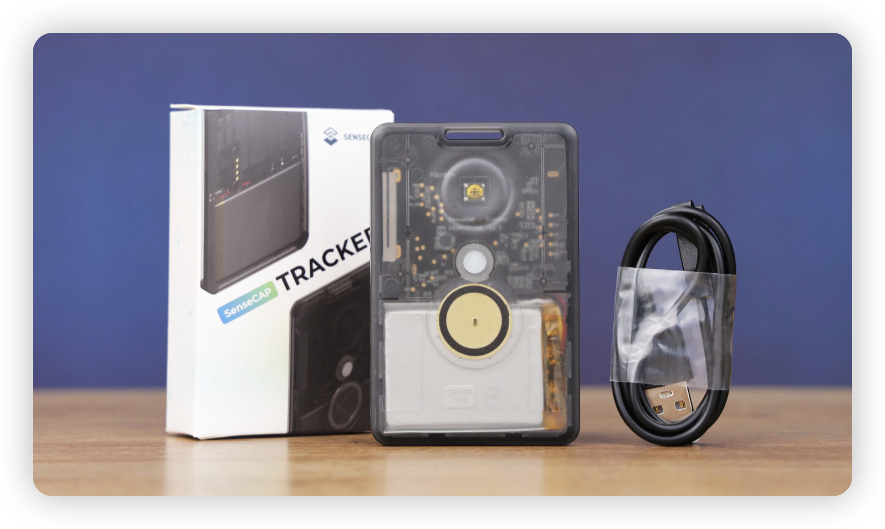

Get your three nodes talking.
Start with the P1 Pro on a table. Add your SenseCAP tracker and Wio Tracker one at a time. Check the model labels before following device-specific steps.
Begin the bench setupRead the label first.
Look at each box, rear label, or order line. Record the full name, including suffixes such as T1000-E, X1, L1 Pro, or L2 Pro. Those suffixes change the power controls, charger, display, and sometimes the firmware target.


If your SenseCAP says T1000-E
Use the T1000-E steps below and Seeed’s T1000-E guide. This is a card-shaped Meshtastic tracker with a magnetic USB charging cable and one main button.
If it says MeshTracker X1
It is a different SenseCAP Meshtastic tracker with USB-C. Use the X1 Meshtastic setup guide for its controls and pairing; do not apply T1000-E charging or recovery steps.
If your Wio says L1 / Lite / Pro / E-Ink
Use the L1-family steps below and Seeed’s L1 guide. The L1-family variants have different displays, enclosure, and battery arrangements.
If it says L2 / L2 Pro or WM1110
Those are other Wio families. Follow the L2 or WM1110 kit documentation for physical controls and firmware. The shared Meshtastic settings and three-node test below still apply.
Power them on at the bench.
Solar Node P1 Pro confirmed model
- Attach the supplied LoRa antenna before powering the node.
- Connect the USB-C cable to a normal 5 V source to activate it. If it does not respond, charge it before trying again; Seeed advises against a fast charger.
- Look for the blue mesh heartbeat light. Keep the panel on the table until the three-node test passes.
SenseCAP tracker follow the matching model
If T1000-E: Charge with its magnetic USB cable if needed, then press the button once. A rising melody and brief LED signal indicate startup. It has no screen, so use the phone app as the interface. If it says X1, charge by USB-C, press its button once, and use the X1 Meshtastic guide instead.
Wio Tracker L1-family steps below
If L1 / L1 Lite / L1 E-Ink: connect USB-C to activate it, then move the power switch upward. The L1 Pro has its own enclosure and power arrangement; use the exact model page if yours is Pro. Attach the supplied LoRa antenna before transmission where your model uses an external antenna. Charge first if the unit does not respond.
NRF-OTA on both the P1 Pro and Wio L1 family.Connect each radio to the app.
- Install the official Meshtastic app and enable Bluetooth on your phone. Pair one device at a time so its settings and name are unambiguous.
- Select the Solar Node in the app’s Bluetooth device list. Seeed documents
123456as its factory pairing code; use the PIN shown by your unit or app if it differs. - Pair the SenseCAP tracker. For a T1000-E, Seeed documents
123456as its default code. For a MeshTracker X1, Seeed also documents123456as the default. For other SenseCAP models, follow the exact pairing guide. - Pair the Wio Tracker. For an L1 model with a display, use the code shown on its screen when offered. Seeed also documents
123456as a default in its Android instructions. If yours is L2 or another Wio model, follow that model’s pairing flow. - Give each radio a distinct short name such as Solar, Card, and Wio. Record its model and firmware version before disconnecting the app to configure the next radio.
Model-specific pairing screens: Solar Node · T1000-E · Wio L1
Put all three on the same mesh.
In the app, inspect each radio separately. Match region, modem preset, and frequency slot; use the region for the place where you will transmit. Keep the primary channel name and key aligned as well. A private secondary channel can come after the first public test. Leave all three roles at CLIENT to start: a client can already relay packets when appropriate.
| Setting | P1 Pro solar | SenseCAP | Wio Tracker |
|---|---|---|---|
| Exact model | P1 Pro | __________ | __________ |
| Firmware | __________ | __________ | __________ |
| Region | __________ | __________ | __________ |
| Modem preset | __________ | __________ | __________ |
| Frequency slot | __________ | __________ | __________ |
| Primary channel name | __________ | __________ | __________ |
| Role | CLIENT | CLIENT | CLIENT |
Meshtastic mesh compatibility ↗ · Channels and position precision ↗ · Role guidance ↗
Run a three-node test.
- Put the three powered radios a few metres apart, with their antennas attached and all on the same settings. Wait for their node information to appear. A nearby test checks configuration before you test distance.
- For a reliable messaging test, connect two clients at the same time—for example, two phones or a phone and computer, each connected to a different node. Send a short public-channel message from the SenseCAP side to the Wio side, then reply. If you have one phone, check node visibility first and return to the two-way message test when a second client is available.
- Repeat with the solar node as one endpoint. Watch whether each recipient actually receives the message; a broadcast relay acknowledgment alone is not proof of end-to-end delivery.
- Only after direct messaging works, move one tracker farther away while keeping the solar node where both paths may reach it. A three-node setup lets you explore relaying, but a visible hop count and the actual received message are stronger evidence than assuming the solar node relayed it.
- Choose a solar mounting site after the bench test. Seeed recommends a tilted panel so water does not accumulate; review public position settings again before leaving it at a fixed location.
Check one layer at a time.
App cannot find a radio
Confirm it is powered and charged. Check Bluetooth permissions and that the app is searching for the right device. Use the exact model’s startup instructions; T1000-E, X1, L1, and L2 controls differ.
App pairs, but nodes do not see each other
Compare region, modem preset, and frequency slot on all three. Confirm each is running Meshtastic, not LoRaWAN or MeshCore firmware.
Nodes appear, but messages do not work
Check the primary channel name and key. Keep the first test close and brief. For a direct message, allow the radios to exchange NodeInfo/public keys first.
Solar node is the weak link
Test it on USB power at the bench first. Confirm the antenna connection, then try a clearer location. Keep solar charging and weatherproofing checks for the final installation.